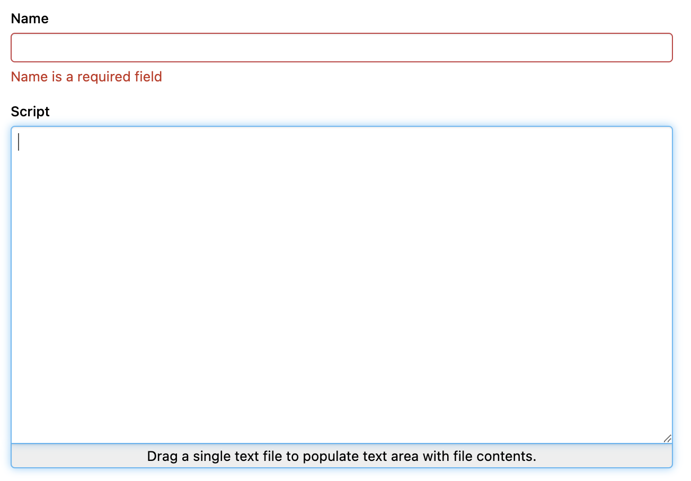
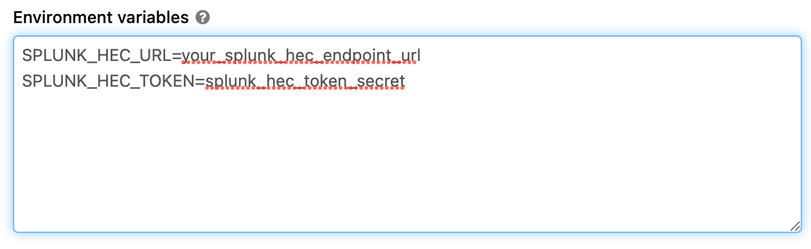

How to export log from Databricks to Splunk using HEC endpoint
Tutorial for pushing Databricks log to Splunk HEC endpoint
Configure HEC endpoint in Splunk
You need to create a HEC endpoint in your Splunk system if you don’t have one. We will not dive into this because there is a lot of materials for this in the Internet already: https://docs.splunk.com/Documentation/Splunk/9.0.1/Data/UsetheHTTPEventCollector
Upload splunk-library-javalogging dependencies to Databricks
This library https://github.com/splunk/splunk-library-javalogging provided HttpEventCollectorLog4jAppender for Log4J to push log directly to Splunk HEC endpoint.
Databricks doesn’t have any Java dependencies manager, so in order to install this libraries, we need to download all the dependencies of this lib and install all to Databricks.
To download all the dependencies, use this pom.xml file https://gist.github.com/nvinhphuc/09f866699bf813ae1ecf610a31ea7a91 and use this command:
mvn install dependency:copy-dependencies
Then all the jar dependencies will be downloaded into target/dependencies
Compressed all this dependencies into splunk_dependencies.zip
LAZY Shortcut: If you are lazy, just grab this splunk_dependencies.zip in this repo https://github.com/nvinhphuc/databricks-splunk-hec.
Upload splunk_dependencies.zip into Databricks storage at /FileStore/splunk
Write script to configure Log4J of Spark
In Databricks, Log4J configuration files locate in /databricks/spark/dbconf/log4j/ We need to add SplunkHttp appender to these files and ref this Appender in the loggers.
LAZY Shortcut: Download init_script.sh and splunk_appender.py from this repo: https://github.com/nvinhphuc/databricks-splunk-hec
Upload these file into Databricks storage /FileStore/splunk
Step 4: Config global init script
You need to config Databricks global init script to run the script every time the clusters start to override the log configuration in the cluster.
Navigate to global init scripts in Admin Console.

Then drag and drop the init_script.sh file into the Script area. Set a name and enable the script.
Step 5: Configure and restart cluster
Set SPLUNK_HEC_URL and SPLUNK_HEC_TOKEN environment variables in your cluster.

Restart your cluster and check your Splunk web to see the log.